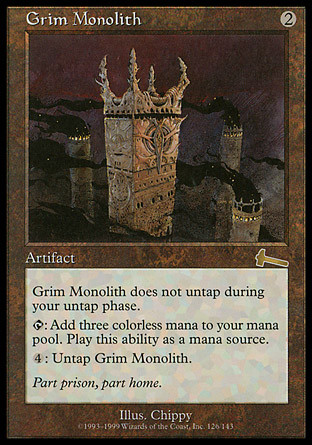
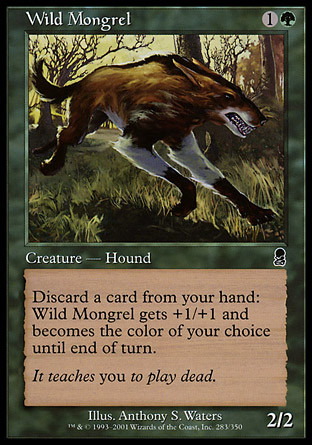

作者：浅原晃
译者：翻译：Jker（94-96）和MTGCN翻译组老大wolfganglittle翻译其他及全部校对
原文地址：浅原晃の「デッキタイムトラベル！」 最終回 － 世界選手権
本文原文为日文，对于擅长英文翻译的我们难度极大，好在JKer发现了窍门，在google日翻英的帮助下狼队顶着有可能最终悲催的结果依然翻译到最后，最终圆满完成。在此，十分感谢参与这次难度超高的两位翻译，同时悬赏招募专业日文翻译1，2名，请有志向，有热情，有想法的会员和我联系。
（译者按：本人日文水平仅为三级，因此是借助了很多翻译工具和词典的帮助完成本文翻译，仅仅可以保证文章的通顺。如发现错误请务必指正，感激不尽。）
随着近日在旧金山举办的世冠赛的落幕，也宣告着这种形式的世冠赛的终结。从明年开始，将会从赛前的邀请赛事中选拔十六名选手参加最终的世冠赛。
在最后一篇“套牌时间之旅”专栏里面，我会从迄今为止十七届世冠赛中，每一届挑选出一套卡牌中的一张卡牌。通过回顾历史，来介绍卡牌的作用以及套牌的运作方式。
那么，让我们开始时间之旅吧！
1994年世冠赛（美国：密尔沃基）
Chaos Orb（混沌法球）
1994年世冠赛是万智牌的第一个世冠赛。这还是处于万智牌发展初期的一场世冠赛，有很多强力的禁限卡牌都在环境，因此这届世冠赛的环境是很混乱的。黑莲花和先人的召还等等P9牌就不用说了，我想说一说最能代表这个混乱时代的卡牌：Chaos Orb（混沌法球）。
动物园 - Bertrand Lestree
1994年世冠亚军/标准构筑
|
4 Mishra's Factory（米斯拉的工厂）
4 Taiga（针叶林）
-
- |
4 Chain Lightning
4
- |
3
2 Lifeforce（生命之力）
- |
这套牌的大部分构成都是直接造成伤害的卡牌，而混沌法球在这一片火海中却是作为解决永久物的手段而大放异彩。
这套牌是1994年世冠赛亚军套牌。和冠军选手Zac Dolan使用的带有撒拉天使的宝石箱控制套牌（译注：参见 http://mtgwiki.com/wiki/宝石箱 ）相比，这套牌是围绕闪电击、火球之类的烧牌组建的套牌。和当今生物强大的环境不同，当年有很多禁限牌，有很多强大的咒语和神器可用，因此生物更多是起到辅助伤害来源的作用。
这张牌简单的说，就是从一定高度扔下来，碰到什么永久物牌就消灭之。
这到底是怎么回事？它的作用听起来挺简单，而正式使用的时候真的是很有趣的。这张牌的对象首先不是牌，而是七零八落放在桌面上的永久物，有说法是把它贴到墙上来使用，甚至还有说法可以把混沌法球撕碎然后抛下来，碰到多少就消灭多少。
虽说这张万智牌初期的卡牌现在已经是禁牌了，但说到万智牌的趣味性，这张牌还是立刻跳进我的脑海。
1995年世冠赛（美国：西雅图）
Black Vise（暗黑老虎钳）
1995年的世冠决赛是两套直接伤害套牌的对战。虽然两套都是没有生物的套牌，也都用了一费的神器，但冠军套使用的是拷问台，而亚军使用的是暗黑老虎钳。
Prison - Maec Hernandez
1995年世冠赛亚军/标准构筑
|
9
4
-
-生物（0）- |
3 Swords to Plowshares（化剑为犁） |
3 -备牌（15）- |
如果你先手一回合下一个老虎钳，就直接能给对手三点伤害。它也被称作免费三闪电，因为它十分强力，三回合很容易就造成9点伤害了。和需要做很多准备工作的拷问台相比，暗黑老虎钳更容易先达成伤害条件。
这个时期，大家公认的危险卡牌中，已经有老虎钳了。
不过为了使老虎钳的作用发挥至极致、持续给对手造成伤害的话，还要限制对手使用手牌才行。基于这个概念，才有了这个叫做“Prison”的套牌类型。
这套牌的主要部件有两个，一个是嚎叫矿井，它是迫使对手积累手牌的手段；另一个是冬之球，每回合只能重置一块地的效果可以控制对手的法术力从而难以消耗手牌。除了这两张牌之外，还有限制对手进攻的避世岛，以及可以锁住对手地的寒冰操弄器，对手的行动就更加受限了。因为对手什么也做不了，所以这套牌有了“Prison”的名号，也正是这样的运作机制才使得老虎钳在这套牌中大展威风。
自然，这个环境以这两个一费神器作为主力武器的套牌也是十分活跃。
1996年世冠赛（美国：伦顿）
Stasis（静态平衡）
96年世冠赛时，最强的套牌叫做“Necrodisk”（译注：一种配备了死冥权能和妮维亚洛之碟的黑色控制套牌类型的统称，），如何对付这套牌也成了关键。
Turbo Stasis - Tommi Hovi
1996年世冠赛八强/标准构筑
|
12
3
- -生物（0）- |
4
4 Lim-Dul's Vault -咒语（36）- |
2 Hydroblast（流水冲击波） |
静态平衡是一个让双方都略过重置步骤的结界，如果没了重置步骤，地、生物都没得用，没了资源的万智牌真的就“静态”了。
获得冠军的Tom Chanpheng使用了一套反黑的骑士军团来对抗Necrodisk套牌，而这套Turbo Stasis采取了另一种方式来面对Necrodisk。
但静态平衡的操控者还要支付维持费用，所以在操控者的维持的时候，就算静态平衡就会被牺牲掉，对手也会因为失去一个重置步骤而导致一个回合的劣势。
而这套牌的目的就是想办法持续为静态平衡提供维持费用，并尽量让静态平衡在对手回合之外脱离战场。
第一个目的可以通过嚎叫矿井加速抓地来实现，而后一个目的则通过回力镖在对手回合将静态平衡移回手来实现，从而让自己获得重置步骤之后继续放下静态平衡锁住对手。只剩手段则是用费顿的手杖保证自己不会抓光牌库的前提下让对手抓光牌库而取胜。
这套Turbo Stasis套牌不仅较为全面，对抗Necrodisk套牌也很有效。死冥权能迅速积累手牌，并且每个回合都能用完所有法术力的套牌类型，这样一来每个回合只能使用一块新下的地基本做不了什么。因此有静态平衡的话，就算能大量抓牌也没用处，并且妮维亚洛之碟由于没法重置，根本用不了。
对于为了减少跳过抓牌步骤而不得不改变策略来降低风险的Necrodisk套牌来说，静态平衡可以说是它的克星了。
1997年世冠赛（美国：西雅图）
Giant Growth（变巨术）
不知大家有没有听说过Senor Stompy套牌。说到纯绿快攻套牌的历史的话，这套Senor Stompy可以说是不得不提。
Senor Stompy - Svend Geertsen
1997年世冠赛四强/标准构筑
|
16 2 Heart of Yavimaya - 4 Fyndhorn Elves（范得贺恩地精） 4 Ghazban Ogre（盖兹本食人魔） 4 Quirion Ranger 4 Rogue Elephant（恶象） 2 4 Spectral Bears（幽魅熊） 3 Harvest Wurm（农获亚龙） 2 Jolrael's Centaur 3 2 Uktabi Orangutan（乌克塔比长臂猿） -生物（32）- |
4 4 Winter Orb（冬之球） 2 Bounty of the Hunt -咒语（10）- |
4 Emerald Charm 2 Crumble（垮坏术） 2 2 3 City of Solitude 1 Uktabi Orangutan（乌克塔比长臂猿） 1 Bounty of the Hunt -备牌（15）- |
Svend Geertsen使用这套Senor Stompy杀进了1997年世冠赛的四强。由于使用了绿色大量的低费优质生物，这套牌生来就是一套快攻套牌。在这之后，快攻套牌就成了公众认可的一个套牌类型了。尤为重要的是一费阶段的生物。恶象是一费3/3，盖兹本食人魔也有2/2，虽然说这些生物都有负面异能，但这套牌可以克服这些负面异能而给对手施加压力，利用持续不断的生物流在前期展开进攻。这套牌虽然没有红色的直烧，但却有像变巨术、Bounty of the Hunt这样的膨胀咒语来辅助生物。另外，由于这套牌对法术力的要求很低，因此也使用了冬之球来封锁对手使用诸如神愤等等的大动作。绿色的高攻防生物加上膨胀咒语的组合是其他颜色都不具备的特色，自那以后，这种类型的套牌也时常跻身metagame的前列。
1998年世冠赛（美国：西雅图）
Counterspell（反击咒语）
和其他四种颜色擅长的猛攻战术不同，蓝色经常使用否决对方施法的战术。
Euro Blue - Randy Buehler
1998年世冠赛/标准构筑
|
18 4 4 - 1 Rainbow Efreet -生物（1）- |
4 Counterspell（反击咒语） 4 Force Spike（力之钉） 4 4 Impulse 3 Forbid（禁制） 3 2 1 Memory Lapse（记忆丧失） 4 Dismiss（退散） 4 Nevinyrral's Disk（妮维亚洛之碟） -咒语（33）- |
4 Hydroblast（流水冲击波） 4 Wasteland（荒原） 4 Sea Sprite（海之仙子） 2 Capsize（倾覆） 1 Grindstone（碎末石碾） -备牌（15）- |
说到最有名的蓝色许可套，就是这套Randy Buehler在98年世冠上使用的这套Euro Blue了。大量的反击咒语，配合抓牌咒语和少量的终结手段，是蓝色许可套牌全盛时期的典型。实际上，这套连八强都没进的套牌后来却被印制成了Champion deck（金边的不可在正式比赛中使用的套牌）而发售了。象征着蓝色的反击咒语、可反复使用的缪司的耳语、带有潜行沙石的法术力基础、从不在自己行动阶段使用法术力即可取胜，这些都成为了这套牌的传世佳话。这套牌囊括了许多虽然不像反击咒语这样优质的硬康但也毫不逊色的条件康，还有禁制这样可以利用无用卡牌循环利用的康，以及只要有法术力就基本无敌的Rainbow Efreet作为终结手段。许多牌手面对这样的套牌，虽然还剩20点生命但已经感到末日临近了。这是许可套牌的黄金时代。
1999年世冠赛（日本：横滨）
Grim Monolith（灰黑巨石）

1999年的世冠赛是在日本的横滨举行的，当时炎热的会场已经让大家感到很恐怖了，加上世冠紧张的气氛使得情形更加严重。
Artifact Red - Kai Budde
1999年世冠赛冠军/标准构筑
|
13 4 City of Traitors（叛徒之都） 3 Ancient Tomb（古墓） - 4 Covetous Dragon（贪婪巨龙） 3 Masticore（异狮） 1 Karn, Silver Golem（银魔像卡恩） -生物（8）- |
4 Cursed Scroll（诅咒卷轴） 4 4 Fire Diamond（焰红钻石） 4 Grim Monolith（灰黑巨石） 4 Temporal Aperture（暂时性缝隙） 2 Worn Powerstone（受损的魔力石） 4 Thran Dynamo（索蓝发电机） 4 2 Mishra's Helix（米斯拉的螺旋柱） -咒语（32）- |
3 2 Shattering Pulse（粉碎脉波） 4 Spellshock（咒语震荡） 2 Rack and Ruin（破坏与崩溃） 2 Boil（沸腾） 1 Phyrexian Processor（非瑞克西亚处理机） 1 Mishra's Helix（米斯拉的螺旋柱） -备牌（15）- |
在这次横滨世冠上崭露头角的Kai Budde最终取得了冠军，实属当年的黑马。他使用的是这套神器红套牌。早年间的黑莲花、混沌法球、暗黑老虎钳等等强力的神器给环境带来了很大的影响。克撒环境也涌现了大量强力的神器，这其中灰黑巨石和电压钥匙的组合可以在前期便加速出大量的法术力，让人感受到莫大的威胁。另外，高费用的野火和贪婪巨龙也和这套牌的主题非常吻合，作为扫场、卡牌优势以及制胜手段都非常有爆发力。实际上，决赛中Kai是以压倒性的优势战胜了使用炸地套牌的对手。于是，使用克撒环境刚面世的神器构组套牌的Kai Budde也登上了万智牌的帝王之座。
2000年世冠赛（比利时：布鲁塞尔）
Stroke of Genius（神来一笔）
同战队的队友拿着差不多的套牌参加对战。2011年世冠赛中，ChannelFireball战队使用75张牌都一样的精炼钢套牌，四位队员都进入八强的景象还历历在目。而2000年的世冠赛中，也是几乎相同的套牌进入了决赛。
Tinker - Bob Maher
2000年世冠亚军/标准构筑
|
10
4 City of Traitors（叛徒之都）
- -生物（9）- |
4
4 Grim Monolith（灰黑巨石） -咒语（30）- |
4 Seal of Removal（移除之缄印） -备牌（15）- |
这一年克撒环境还健在，前一年的红色变成了蓝色，神器套牌也还健在。Jon Finkel和Bob Maher在决赛中使用几乎一样的套牌对战，唯一不同的就是抓牌咒语的选择。同样都是抓牌咒语，但脑力激荡和神来一笔却性质完全不同。这一点差别也引来了众多牌手的注意并引发了许多议论。
当然，不可能说因为这一个差异而武断地认为哪个套牌更优秀，但就一个赛事的match up而言，还是可以分出孰优孰劣的。
不过两位顶尖牌手，各使用了有长有短的两张牌，哪个更泛用一些却是很值得深思的问题，也正体现了万智牌的深度与难度。
顺便说一句，我个人更喜欢神来一笔，不知道大家更喜欢哪个呢？
2001年世冠赛（加拿大：多伦多）
Opposition（唱反调）
最近几年日本在世界赛场上的活跃表现已经不出奇了，但就当时万智牌还在发展中的日本，能打进世冠赛八强是一个很大的目标。
Turbo Taxi - 森 勝洋（Katsuhiro Mori）
2001年世冠赛第九名/标准构筑
|
15
4
- -生物（0）- |
4 |
3
2 -备牌（15）- |
就在这个时候，2001年的世冠赛中，森胜洋取得了最接近八强的成绩，并从此以后频繁出现在世冠赛场上。
这次使用的Turbo Taxi套牌是日本人原创的套牌。这套牌是Lock deck的一种，利用唱反调来锁住对手的永久物使其不能正常运作，从而取得胜利。
这套牌是根据克撒环境“松鼠唱反调”套牌改进而来的，但是改用了腐生物衍生物作为唱反调的搭档。腐生物的制造机是自然肇生，利用手牌来产生衍生物，配合宣泄这类的牌可以产生大量的衍生物。
这套牌的优势在于自然肇生只有一点绿色，因此绿色完全是作为splash颜色出现，基本来讲这套牌是一套纯蓝许可套，通过有效利用宣泄和横阻等牌，与自然肇生产生更好的配合。
加上静态球，这套牌就基本可以构成死锁控住对手。冈本寻（Okamoto Hiro）也使用这套牌获得了第十名的成绩，可以说是日本牌手在世冠赛上首次赢得存在感的一场比赛。
2002年世冠赛（澳大利亚：悉尼）
Wild Mongrel（野杂种狗）

奥德赛出现了一个叫做灵能阿托格的怪物，套牌环境基本被这个怪物统治着。世冠赛上也有许多牌手都用带有灵能阿托格的套牌，不过依然存在着一些可以与之抗衡的套牌。
RedZone2K2 - Brian Kibler
2002年世冠赛第十一名/标准构筑
|
7
4
- -生物（26）- |
3
2 -咒语（12）- |
2
1 -备牌（15）- |
套牌也使用了增盈/亏缺以及生机祈愿，使套牌能应付几乎所有的情况。
Brian Kibler使用的这套带有野杂种狗的套牌就是有实力击败灵能阿托格套牌的一套快攻套牌。这套牌和传统的纯绿快攻比起来多了很多颜色，使得泛用性和强度都有所提高。和主流快攻套牌相比，加入了混白色的跃丛驽蛙和荣耀等牌，增强了套牌对应去除的能力。
当环境中有十分霸道的套牌存在时，如何与之战斗，或者如何设计一套能与之抗衡的套牌，都会让这牌手载入万智牌的史册。
2003年世冠赛（德国：柏林）
Mirari’s Wake（映奇宝珠的余韵）

柏林世冠赛的决赛是使用了映奇宝珠的余韵的两套镜像套牌对决。对决的两名选手是代表日本人初次进入八强的冈本寻和德国本地选手Daniel Zink。
Wake - Daniel Zink
2003年世冠赛冠军/标准构筑
|
7 4 4 4 4 2 2 - -生物（0）- |
2 4 3 3 4 3 3 2 1 4 3 1 -咒语（33）- |
|
映奇宝珠的余韵套牌是比较有名的控制套牌，但却不像传统的许可套那样被动，其本质是具有进攻性的。另外，原本控制套牌都是走满是高强度卡牌的路线，但这套牌却包含了很多类似片刻宁静、重拾信念和魔力流失这样的赚节奏拖时间的卡牌。Wake套牌利用拖时间的空隙来为映奇宝珠的余韵做准备，利用正义的宣判进攻，利用强迫症和深入分析挖掘牌库，利用映奇宝珠重复利用黠智祈愿赚取卡牌优势，从而获得胜利。这套使用一套制胜手段、没有生物、引入了相对优势概念的套牌，不得不说是自然之美极致体现的套牌。
2004年世冠赛（美国：旧金山）
Eternal Witness（不朽见证人）
当时，循环机制颠覆了只有蓝色才有卡牌优势的传统。通过循环本身就可以抓一张牌，而循环再加上触发星幽滑移的异能带来的巨大优势造就了这套牌的诞生。
Eternal Slide - Julien Nuijten
2004年世冠赛冠军/标准构筑
|
7 6 4 4 4 - 4 4 4 -生物（12）- |
4 2 4 4 4 2 1 2 -咒语（23）- |
4 3 3 3 2 -备牌（15）- |
这套叫做Eternal Slide的套牌是石破天惊环境的循环套牌的变形。本来那套循环套牌是红白双色的，这套牌变成了白绿双色，并利用了星幽滑移的效果让生物移除战场。尤其是将不朽见证人从战场滑出去便可以在回合末将循环掉的卡牌回收，这两张牌便构成了一个简单的永动机。套牌采用双色，另外以循环为主题的高稳定性，以及使用了大量应对当时同为最强套牌的共鸣套的手段，成了这套牌夺冠的重要原因。当时的标准构筑和环境构筑都是共鸣套牌占据大片领地，而这套牌却能与之抗衡并在比赛中取得了胜利。
2005年世冠赛（日本：横滨）
Vitu-Ghazi, the City-Tree（树都维图加基）
世冠赛第二次来到了横滨，这一年的话题无外乎都是日本在万智赛场上的活跃表现。森胜洋这次夺得了冠军，但驾驭的虽然还是白绿套牌，但却不是控制套牌，而是一套快攻套牌。
Ghazi-Glare - 森 勝洋（Katsuhiro Mori）
2005年世冠赛冠军/标准构筑
|
5 4 4 4 4 1 1 - 4 3 1 4 4 3 3 2 -生物（24）- |
2 3 3 3 2 -咒语（13）- |
2 2 3 2 1 1 1 1 2 -备牌（15）- |
白绿色组由于都有强劲的生物，因而是一个很适合快攻的色组，但却也是个欠缺灵活性的色组。没有黑色的去除，没有红色的直烧，是万智牌中的“纯洁无瑕”组合。然而，这套牌中的辉龙阳星却可以和备牌的牺牲小我配合，让白绿快攻套牌也有了操控永久物的能力。尤其是面对控制套牌，这套牌的机制十分有效，让一向正直的白绿套牌有了回旋的能力，以致登上了世界冠军的宝座。另外，这套牌不仅在大型赛事上成绩优异，在小型的万智牌活动中也频繁出现，并且因为在世冠赛上的表现而闻名。牌手们使用的牌都是一样的，真正让这些牌强大起来的是牌手无边的想象力。
2006年世冠赛（法国：巴黎）
Savannah Lions（草原雄狮）
快攻、控制、Combo……种类繁多的套牌类型使得这个套牌环境十分健康。2006年的世冠赛八强也是每种类型套牌都有。
Boros Weenie - Paulo Vitor Damo da Rosa
2006年世冠赛八强/标准构筑
|
4
4
- -生物（23）- |
4
4 -咒语（16）- |
4
3 -备牌（15）- |
虽然战术很基本，但却简单中透着霸气。不过在四分之一决赛中，Paulo却被操控着龙群风暴的三原槙仁击败而没能进入四强。
在这之中，完成度最高的快攻套牌就是当今最强牌手之一的Paulo Vitor Damo da Rosa操控的Boros Weenie（红白快攻）套牌。Boros取自拉尼卡十公会中红白公会的名字，代指红白色组。以一费2/1的草原雄狮为先锋的优质生物配合红色的强劲火力可以在最短时间内便将对手生命降至零点。
2007年世冠赛（美国：纽约）
Tarmogoyf（塔莫耶夫）
预知将来系列透露了鹏洛客类型的出现，并在随之而来的洛温环境出现了鹏洛客类型的永久物，大家都开始热衷于鹏洛客系统中。不过受益最大的却是塔莫耶夫这个生物。
黑绿地精 - 中野 圭貴（Yoshitaka Takano）
2007年世冠赛八强/标准构筑
|
5
4
-土地（23）- -生物（24）- |
4 -咒语（13）- |
1
2 -备牌（15）- |
召兽使贾路已经是个很强劲的卡牌了，然而进入坟墓场之后，他还可以让塔莫耶夫大上一圈。由于进入坟墓场的套牌类型的增加，使得塔莫耶夫很容易就超越5点攻击力。这套黑绿妖精套牌的基础是妖精部族，但却让贾路和塔莫耶夫这两张牌抢去了风头。
攫取思绪除了确保安全之外还可以膨胀塔莫耶夫，渎神指命也可以很廉价地从坟墓场复活塔莫耶夫，因此更加凸显了塔莫耶夫的强大。
如今的Legacy和Modern赛制依然有很多套牌都以塔莫耶夫作为核心生物，延续着它传奇的历史。
2008年世冠赛（美国：孟菲斯）
Blightning（脑电击）
有长必有短，优点也总是伴随缺点共同到来。如果套牌环境中出现了一套强力套牌，那么通常要做的就是看看他有什么弱点。
Blightning - 池田 剛（Tsuyoshi Ikeda）
2008年世冠赛四强/标准构筑
|
6
4
- -生物（15）- |
4
4 -咒语（20）- |
3
3 -备牌（15）- |
这套Blightning套牌是加入了脑电击和苦涩花开的纯红快攻套牌。这两张牌本身并不强力，苦涩花开和这套牌也没什么配合。
不过，如果对手是仙灵套牌的话就另当别论了。环境内的顶尖套牌是仙灵套牌，这套牌本身就很难应付苦涩花开制造衍生物时烫血的麻烦，因而生命值和卡牌优势都很关键的情况下，一旦受到脑电击的打击就是十分致命的。
这套牌就是保留了小红的基础之上，加入了克制仙灵套牌的手段。对于对手的优势卡牌苦涩花开，这套牌也异想天开地同样使用苦涩花开作为确保优势的方法。把握住对手的弱点，并且想办法寻找利用此弱点的卡牌，才是取胜的关键。
2009年世冠赛（意大利：罗马）
Bloodbraid Elf（血辫地精）
由于单卡强度高，套牌弱点少，勇得套牌在阿拉若在环境内的很长时间都是标准构筑的王者。
Jund - David Reitbauer
2009年世冠赛亚军/标准构筑
|
2
3
- -生物（16）- |
4 -咒语（19）- |
4
3 -备牌（15）- |
这一年世冠赛的中心也是勇得套牌。勇得套牌的成功一方面是充分利用了倾曳异能获得卡牌优势，另一方面是这套牌又有十分强劲的进攻能力。
失去卡牌优势=套牌断了气，这是这套牌强度的基础。另外，三费处拥有涡心鼓动和脑电击这样的强力去除和手牌破坏手段，让这套牌有着其他套牌无法比拟的应对能力。
这样一套弱点很少的套牌怎样会被战胜呢？那就是抢勇得套牌的先机行事。因此诞生了一些纯红烧套牌和使用开路鬼怪的快攻套牌，但依然没有套牌能获得像勇得套牌这样明显的卡牌优势。
2010年世冠赛（日本：千叶）
Emrakul, the Aeons Torn（万世创伤伊莫库）
这是在日本举办的第三次世冠赛了。这次世冠赛，能否胜过瓦拉库套牌成为了重点。赞迪卡环境的瓦拉库由于有了太古泰坦的助力，而成为了环境内最强力的Combo套牌。
纯绿奥扎奇 - Love Janse
2010年世冠赛四强/标准构筑
|
12
4
- -生物（18）- |
3
4 -咒语（16）- |
1
4 -备牌（15）- |
纯绿奥扎奇和瓦拉库一样都是使用了太古泰坦的套牌，但法术力基础不一样，并且制胜手段也不一样。
在这次大赛中，蓝黑控制套牌赢了瓦拉库套牌而获得了冠军。不过我之前介绍过蓝黑控制套牌了，这次介绍一下我个人偏爱的使用万世创伤伊莫库的套牌。
除了通常的法术力加速手段之外，这套牌也使用了奥扎奇殿堂和乌金之眼这两个专门为奥扎奇咒语加速的手段，来施放真理屠夫寇基雷和万世创伤伊莫库这样的大个子。通常来说，这么大费用的生物都没法用“正常”的办法使用，而这套牌却是生拍进场的。
需要施放十五费咒语的法术力基础也是很变态的，这样的套牌能活跃的原因完全是因为万世创伤伊莫库太强大了。
如果说十五费的咒语还能足够强力的话，也非伊莫库莫属了。
2011年世冠赛（美国：旧金山）
Inferno Titan（炼狱泰坦）
前几日的2011年世冠赛中，日本第三位世界冠军弥永淳也使用的是红绿狼栖地套牌。
红绿狼栖地 - 彌永 淳也（Junya Iyanaga）
2011年世冠赛冠军/标准构筑
|
6
5
- -生物（14）- |
4
2 -咒语（20）- |
4
2 -备牌（15）- |
由于津村健志（Kenji Tsumura）已经介绍过这套牌了，我就不详细说明了。弥永淳也在保留了大多数牌手使用的狼栖地套牌的基础上，去掉了原初猎人贾路，而采用了炼狱泰坦，因此也重新构筑了法术力基础并加以改善，并最终夺得了冠军。
八强中有四人都是来自ChannelFireball战队，并使用同样的精炼钢套牌。但无论怎样的环境，套牌完成度看起来多高，都需要根据情况多思考多采取变化。
===
（完）